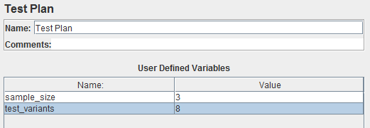
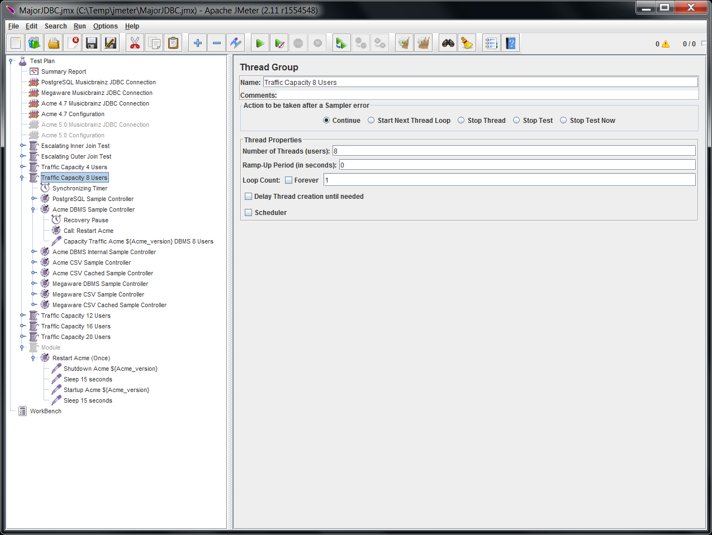

Load Testing with Apache JMeter
 Michael Dowden
Michael Dowden
About Me
- Learned JMeter consulting for Eli Lilly
- Full stack, full-lifecycle development since 2000
- Founded Mobilify Technology, public health startup, 2013
- Manager, Indianapolis Java User Group, Feb 2012
- MBA Entrepreneurship, Ball State University, 2011
- Founded Tekyn, software consulting, Feb 2006
- BS Computer Science, Taylor University, 2000
Understand your Software
- How many concurrent users can it support?
- What is the response time for each page/service?
- Does response time fluctuate throughout the day?
- How does your application scale with users, data, or hits?
- What performance bottlenecks exist?
Outline
- What is JMeter
- Getting Started
- Basic Tests
- Testing Overview
- Test Design
- Advanced Topics
- Extending JMeter
- Further Reading
Apache JMeter
Test performance and simulate load over various protocols:
- HTTP, HTTPS, SOAP (Web)
- FTP
- JDBC (Database)
- LDAP
- JMS (Middleware)
- SMTP, POP, IMAP (Email)
- MongoDB
- TCP
- Shell Scripts
Apache JMeter
Features
- Multithreaded
- Distributed
- Integrated recording
- Error handling
- Timing & Scheduling
- Extensible
- Scriptable
Getting Started
- Download: http://jmeter.apache.org/
- Extract folder from ZIP or TAR.GZ
- Run bin/jmeter.sh or bin/jmeter.bat
Minimum Viable Test
- Thread Group
- Sampler
- Listener
Basic HTTP Test
- Thread Group
- HTTP Request Sampler
- Summary Report Listener
http-results.xml
<?xml version="1.0" encoding="UTF-8"?>
<testResults version="1.2">
<httpSample t="3" lt="3" ts="1393282802104" s="true" lb="Local Web Root" rc="200" rm="OK" tn="Basic HTTP Test 1-1" dt="text" by="735"/>
<httpSample t="1" lt="1" ts="1393282802107" s="true" lb="Local Web Root" rc="200" rm="OK" tn="Basic HTTP Test 1-1" dt="text" by="735"/>
<httpSample t="2" lt="2" ts="1393282802109" s="true" lb="Local Web Root" rc="200" rm="OK" tn="Basic HTTP Test 1-1" dt="text" by="735"/>
<httpSample t="2" lt="2" ts="1393282802111" s="true" lb="Local Web Root" rc="200" rm="OK" tn="Basic HTTP Test 1-1" dt="text" by="735"/>
<httpSample t="1" lt="1" ts="1393282802113" s="true" lb="Local Web Root" rc="200" rm="OK" tn="Basic HTTP Test 1-1" dt="text" by="735"/>
<httpSample t="2" lt="2" ts="1393282802204" s="true" lb="Local Web Root" rc="200" rm="OK" tn="Basic HTTP Test 1-2" dt="text" by="735"/>
<httpSample t="1" lt="1" ts="1393282802207" s="true" lb="Local Web Root" rc="200" rm="OK" tn="Basic HTTP Test 1-2" dt="text" by="735"/>
<httpSample t="1" lt="1" ts="1393282802209" s="true" lb="Local Web Root" rc="200" rm="OK" tn="Basic HTTP Test 1-2" dt="text" by="735"/>
<httpSample t="1" lt="1" ts="1393282802211" s="true" lb="Local Web Root" rc="200" rm="OK" tn="Basic HTTP Test 1-2" dt="text" by="735"/>
<httpSample t="1" lt="1" ts="1393282802212" s="true" lb="Local Web Root" rc="200" rm="OK" tn="Basic HTTP Test 1-2" dt="text" by="735"/>
<httpSample t="2" lt="2" ts="1393282802304" s="true" lb="Local Web Root" rc="200" rm="OK" tn="Basic HTTP Test 1-3" dt="text" by="735"/>
<httpSample t="1" lt="1" ts="1393282802307" s="true" lb="Local Web Root" rc="200" rm="OK" tn="Basic HTTP Test 1-3" dt="text" by="735"/>
<httpSample t="1" lt="1" ts="1393282802310" s="true" lb="Local Web Root" rc="200" rm="OK" tn="Basic HTTP Test 1-3" dt="text" by="735"/>
<httpSample t="2" lt="1" ts="1393282802311" s="true" lb="Local Web Root" rc="200" rm="OK" tn="Basic HTTP Test 1-3" dt="text" by="735"/>
<httpSample t="1" lt="1" ts="1393282802313" s="true" lb="Local Web Root" rc="200" rm="OK" tn="Basic HTTP Test 1-3" dt="text" by="735"/>
<httpSample t="1" lt="1" ts="1393282802406" s="true" lb="Local Web Root" rc="200" rm="OK" tn="Basic HTTP Test 1-4" dt="text" by="735"/>
<httpSample t="1" lt="1" ts="1393282802408" s="true" lb="Local Web Root" rc="200" rm="OK" tn="Basic HTTP Test 1-4" dt="text" by="735"/>
<httpSample t="1" lt="1" ts="1393282802410" s="true" lb="Local Web Root" rc="200" rm="OK" tn="Basic HTTP Test 1-4" dt="text" by="735"/>
<httpSample t="1" lt="1" ts="1393282802411" s="true" lb="Local Web Root" rc="200" rm="OK" tn="Basic HTTP Test 1-4" dt="text" by="735"/>
<httpSample t="1" lt="1" ts="1393282802413" s="true" lb="Local Web Root" rc="200" rm="OK" tn="Basic HTTP Test 1-4" dt="text" by="735"/>
<httpSample t="2" lt="2" ts="1393282802505" s="true" lb="Local Web Root" rc="200" rm="OK" tn="Basic HTTP Test 1-5" dt="text" by="735"/>
<httpSample t="5" lt="5" ts="1393282802508" s="true" lb="Local Web Root" rc="200" rm="OK" tn="Basic HTTP Test 1-5" dt="text" by="735"/>
<httpSample t="1" lt="1" ts="1393282802514" s="true" lb="Local Web Root" rc="200" rm="OK" tn="Basic HTTP Test 1-5" dt="text" by="735"/>
<httpSample t="1" lt="1" ts="1393282802516" s="true" lb="Local Web Root" rc="200" rm="OK" tn="Basic HTTP Test 1-5" dt="text" by="735"/>
<httpSample t="1" lt="1" ts="1393282802518" s="true" lb="Local Web Root" rc="200" rm="OK" tn="Basic HTTP Test 1-5" dt="text" by="735"/>
<httpSample t="2" lt="2" ts="1393282802606" s="true" lb="Local Web Root" rc="200" rm="OK" tn="Basic HTTP Test 1-6" dt="text" by="735"/>
<httpSample t="1" lt="1" ts="1393282802608" s="true" lb="Local Web Root" rc="200" rm="OK" tn="Basic HTTP Test 1-6" dt="text" by="735"/>
<httpSample t="1" lt="1" ts="1393282802610" s="true" lb="Local Web Root" rc="200" rm="OK" tn="Basic HTTP Test 1-6" dt="text" by="735"/>
<httpSample t="1" lt="1" ts="1393282802612" s="true" lb="Local Web Root" rc="200" rm="OK" tn="Basic HTTP Test 1-6" dt="text" by="735"/>
<httpSample t="2" lt="2" ts="1393282802613" s="true" lb="Local Web Root" rc="200" rm="OK" tn="Basic HTTP Test 1-6" dt="text" by="735"/>
<httpSample t="2" lt="2" ts="1393282802707" s="true" lb="Local Web Root" rc="200" rm="OK" tn="Basic HTTP Test 1-7" dt="text" by="735"/>
<httpSample t="1" lt="1" ts="1393282802709" s="true" lb="Local Web Root" rc="200" rm="OK" tn="Basic HTTP Test 1-7" dt="text" by="735"/>
<httpSample t="1" lt="1" ts="1393282802711" s="true" lb="Local Web Root" rc="200" rm="OK" tn="Basic HTTP Test 1-7" dt="text" by="735"/>
<httpSample t="1" lt="1" ts="1393282802713" s="true" lb="Local Web Root" rc="200" rm="OK" tn="Basic HTTP Test 1-7" dt="text" by="735"/>
<httpSample t="2" lt="2" ts="1393282802714" s="true" lb="Local Web Root" rc="200" rm="OK" tn="Basic HTTP Test 1-7" dt="text" by="735"/>
<httpSample t="2" lt="2" ts="1393282802806" s="true" lb="Local Web Root" rc="200" rm="OK" tn="Basic HTTP Test 1-8" dt="text" by="735"/>
<httpSample t="1" lt="1" ts="1393282802809" s="true" lb="Local Web Root" rc="200" rm="OK" tn="Basic HTTP Test 1-8" dt="text" by="735"/>
<httpSample t="1" lt="1" ts="1393282802811" s="true" lb="Local Web Root" rc="200" rm="OK" tn="Basic HTTP Test 1-8" dt="text" by="735"/>
<httpSample t="1" lt="1" ts="1393282802812" s="true" lb="Local Web Root" rc="200" rm="OK" tn="Basic HTTP Test 1-8" dt="text" by="735"/>
<httpSample t="1" lt="1" ts="1393282802814" s="true" lb="Local Web Root" rc="200" rm="OK" tn="Basic HTTP Test 1-8" dt="text" by="735"/>
<httpSample t="2" lt="2" ts="1393282802906" s="true" lb="Local Web Root" rc="200" rm="OK" tn="Basic HTTP Test 1-9" dt="text" by="735"/>
<httpSample t="1" lt="1" ts="1393282802909" s="true" lb="Local Web Root" rc="200" rm="OK" tn="Basic HTTP Test 1-9" dt="text" by="735"/>
<httpSample t="1" lt="1" ts="1393282802911" s="true" lb="Local Web Root" rc="200" rm="OK" tn="Basic HTTP Test 1-9" dt="text" by="735"/>
<httpSample t="1" lt="1" ts="1393282802912" s="true" lb="Local Web Root" rc="200" rm="OK" tn="Basic HTTP Test 1-9" dt="text" by="735"/>
<httpSample t="1" lt="1" ts="1393282802914" s="true" lb="Local Web Root" rc="200" rm="OK" tn="Basic HTTP Test 1-9" dt="text" by="735"/>
<httpSample t="2" lt="2" ts="1393282803007" s="true" lb="Local Web Root" rc="200" rm="OK" tn="Basic HTTP Test 1-10" dt="text" by="735"/>
<httpSample t="1" lt="1" ts="1393282803010" s="true" lb="Local Web Root" rc="200" rm="OK" tn="Basic HTTP Test 1-10" dt="text" by="735"/>
<httpSample t="1" lt="1" ts="1393282803012" s="true" lb="Local Web Root" rc="200" rm="OK" tn="Basic HTTP Test 1-10" dt="text" by="735"/>
<httpSample t="1" lt="1" ts="1393282803014" s="true" lb="Local Web Root" rc="200" rm="OK" tn="Basic HTTP Test 1-10" dt="text" by="735"/>
<httpSample t="2" lt="2" ts="1393282803015" s="true" lb="Local Web Root" rc="200" rm="OK" tn="Basic HTTP Test 1-10" dt="text" by="735"/>
<httpSample t="2" lt="2" ts="1393282803108" s="true" lb="Local Web Root" rc="200" rm="OK" tn="Basic HTTP Test 1-11" dt="text" by="735"/>
<httpSample t="2" lt="2" ts="1393282803110" s="true" lb="Local Web Root" rc="200" rm="OK" tn="Basic HTTP Test 1-11" dt="text" by="735"/>
<httpSample t="1" lt="1" ts="1393282803113" s="true" lb="Local Web Root" rc="200" rm="OK" tn="Basic HTTP Test 1-11" dt="text" by="735"/>
<httpSample t="1" lt="1" ts="1393282803114" s="true" lb="Local Web Root" rc="200" rm="OK" tn="Basic HTTP Test 1-11" dt="text" by="735"/>
<httpSample t="1" lt="1" ts="1393282803116" s="true" lb="Local Web Root" rc="200" rm="OK" tn="Basic HTTP Test 1-11" dt="text" by="735"/>
<httpSample t="2" lt="2" ts="1393282803208" s="true" lb="Local Web Root" rc="200" rm="OK" tn="Basic HTTP Test 1-12" dt="text" by="735"/>
<httpSample t="1" lt="1" ts="1393282803211" s="true" lb="Local Web Root" rc="200" rm="OK" tn="Basic HTTP Test 1-12" dt="text" by="735"/>
<httpSample t="1" lt="1" ts="1393282803213" s="true" lb="Local Web Root" rc="200" rm="OK" tn="Basic HTTP Test 1-12" dt="text" by="735"/>
<httpSample t="1" lt="1" ts="1393282803214" s="true" lb="Local Web Root" rc="200" rm="OK" tn="Basic HTTP Test 1-12" dt="text" by="735"/>
<httpSample t="1" lt="1" ts="1393282803216" s="true" lb="Local Web Root" rc="200" rm="OK" tn="Basic HTTP Test 1-12" dt="text" by="735"/>
<httpSample t="2" lt="2" ts="1393282803308" s="true" lb="Local Web Root" rc="200" rm="OK" tn="Basic HTTP Test 1-13" dt="text" by="735"/>
<httpSample t="5" lt="5" ts="1393282803311" s="true" lb="Local Web Root" rc="200" rm="OK" tn="Basic HTTP Test 1-13" dt="text" by="735"/>
<httpSample t="1" lt="1" ts="1393282803317" s="true" lb="Local Web Root" rc="200" rm="OK" tn="Basic HTTP Test 1-13" dt="text" by="735"/>
<httpSample t="1" lt="1" ts="1393282803319" s="true" lb="Local Web Root" rc="200" rm="OK" tn="Basic HTTP Test 1-13" dt="text" by="735"/>
<httpSample t="1" lt="1" ts="1393282803320" s="true" lb="Local Web Root" rc="200" rm="OK" tn="Basic HTTP Test 1-13" dt="text" by="735"/>
<httpSample t="2" lt="2" ts="1393282803408" s="true" lb="Local Web Root" rc="200" rm="OK" tn="Basic HTTP Test 1-14" dt="text" by="735"/>
<httpSample t="1" lt="1" ts="1393282803411" s="true" lb="Local Web Root" rc="200" rm="OK" tn="Basic HTTP Test 1-14" dt="text" by="735"/>
<httpSample t="1" lt="1" ts="1393282803413" s="true" lb="Local Web Root" rc="200" rm="OK" tn="Basic HTTP Test 1-14" dt="text" by="735"/>
<httpSample t="1" lt="1" ts="1393282803414" s="true" lb="Local Web Root" rc="200" rm="OK" tn="Basic HTTP Test 1-14" dt="text" by="735"/>
<httpSample t="1" lt="1" ts="1393282803416" s="true" lb="Local Web Root" rc="200" rm="OK" tn="Basic HTTP Test 1-14" dt="text" by="735"/>
<httpSample t="2" lt="2" ts="1393282803509" s="true" lb="Local Web Root" rc="200" rm="OK" tn="Basic HTTP Test 1-15" dt="text" by="735"/>
<httpSample t="2" lt="2" ts="1393282803512" s="true" lb="Local Web Root" rc="200" rm="OK" tn="Basic HTTP Test 1-15" dt="text" by="735"/>
<httpSample t="2" lt="2" ts="1393282803514" s="true" lb="Local Web Root" rc="200" rm="OK" tn="Basic HTTP Test 1-15" dt="text" by="735"/>
<httpSample t="1" lt="1" ts="1393282803516" s="true" lb="Local Web Root" rc="200" rm="OK" tn="Basic HTTP Test 1-15" dt="text" by="735"/>
<httpSample t="1" lt="1" ts="1393282803518" s="true" lb="Local Web Root" rc="200" rm="OK" tn="Basic HTTP Test 1-15" dt="text" by="735"/>
<httpSample t="2" lt="2" ts="1393282803609" s="true" lb="Local Web Root" rc="200" rm="OK" tn="Basic HTTP Test 1-16" dt="text" by="735"/>
<httpSample t="2" lt="2" ts="1393282803611" s="true" lb="Local Web Root" rc="200" rm="OK" tn="Basic HTTP Test 1-16" dt="text" by="735"/>
<httpSample t="1" lt="1" ts="1393282803613" s="true" lb="Local Web Root" rc="200" rm="OK" tn="Basic HTTP Test 1-16" dt="text" by="735"/>
<httpSample t="1" lt="1" ts="1393282803615" s="true" lb="Local Web Root" rc="200" rm="OK" tn="Basic HTTP Test 1-16" dt="text" by="735"/>
<httpSample t="1" lt="1" ts="1393282803616" s="true" lb="Local Web Root" rc="200" rm="OK" tn="Basic HTTP Test 1-16" dt="text" by="735"/>
<httpSample t="2" lt="2" ts="1393282803710" s="true" lb="Local Web Root" rc="200" rm="OK" tn="Basic HTTP Test 1-17" dt="text" by="735"/>
<httpSample t="1" lt="1" ts="1393282803713" s="true" lb="Local Web Root" rc="200" rm="OK" tn="Basic HTTP Test 1-17" dt="text" by="735"/>
<httpSample t="1" lt="1" ts="1393282803715" s="true" lb="Local Web Root" rc="200" rm="OK" tn="Basic HTTP Test 1-17" dt="text" by="735"/>
<httpSample t="1" lt="1" ts="1393282803716" s="true" lb="Local Web Root" rc="200" rm="OK" tn="Basic HTTP Test 1-17" dt="text" by="735"/>
<httpSample t="1" lt="1" ts="1393282803718" s="true" lb="Local Web Root" rc="200" rm="OK" tn="Basic HTTP Test 1-17" dt="text" by="735"/>
<httpSample t="2" lt="2" ts="1393282803810" s="true" lb="Local Web Root" rc="200" rm="OK" tn="Basic HTTP Test 1-18" dt="text" by="735"/>
<httpSample t="1" lt="1" ts="1393282803812" s="true" lb="Local Web Root" rc="200" rm="OK" tn="Basic HTTP Test 1-18" dt="text" by="735"/>
<httpSample t="1" lt="1" ts="1393282803814" s="true" lb="Local Web Root" rc="200" rm="OK" tn="Basic HTTP Test 1-18" dt="text" by="735"/>
<httpSample t="1" lt="1" ts="1393282803816" s="true" lb="Local Web Root" rc="200" rm="OK" tn="Basic HTTP Test 1-18" dt="text" by="735"/>
<httpSample t="1" lt="1" ts="1393282803817" s="true" lb="Local Web Root" rc="200" rm="OK" tn="Basic HTTP Test 1-18" dt="text" by="735"/>
<httpSample t="2" lt="2" ts="1393282803911" s="true" lb="Local Web Root" rc="200" rm="OK" tn="Basic HTTP Test 1-19" dt="text" by="735"/>
<httpSample t="1" lt="1" ts="1393282803913" s="true" lb="Local Web Root" rc="200" rm="OK" tn="Basic HTTP Test 1-19" dt="text" by="735"/>
<httpSample t="1" lt="1" ts="1393282803915" s="true" lb="Local Web Root" rc="200" rm="OK" tn="Basic HTTP Test 1-19" dt="text" by="735"/>
<httpSample t="1" lt="1" ts="1393282803917" s="true" lb="Local Web Root" rc="200" rm="OK" tn="Basic HTTP Test 1-19" dt="text" by="735"/>
<httpSample t="1" lt="1" ts="1393282803918" s="true" lb="Local Web Root" rc="200" rm="OK" tn="Basic HTTP Test 1-19" dt="text" by="735"/>
<httpSample t="2" lt="2" ts="1393282804011" s="true" lb="Local Web Root" rc="200" rm="OK" tn="Basic HTTP Test 1-20" dt="text" by="735"/>
<httpSample t="1" lt="1" ts="1393282804013" s="true" lb="Local Web Root" rc="200" rm="OK" tn="Basic HTTP Test 1-20" dt="text" by="735"/>
<httpSample t="1" lt="1" ts="1393282804015" s="true" lb="Local Web Root" rc="200" rm="OK" tn="Basic HTTP Test 1-20" dt="text" by="735"/>
<httpSample t="1" lt="1" ts="1393282804017" s="true" lb="Local Web Root" rc="200" rm="OK" tn="Basic HTTP Test 1-20" dt="text" by="735"/>
<httpSample t="1" lt="1" ts="1393282804018" s="true" lb="Local Web Root" rc="200" rm="OK" tn="Basic HTTP Test 1-20" dt="text" by="735"/>
</testResults>
Basic JDBC Test
- JDBC Connection Configuration
- Thread Group
- JDBC Request Sampler
- Summary Report Listener
http-results.xml
<?xml version="1.0" encoding="UTF-8"?>
<testResults version="1.2">
<sample t="1508" lt="4" ts="1393282693623" s="true" lb="Select From Location" rc="200" rm="OK" tn="Basic JDBC Test 1-1" dt="text" by="23370113"/>
<sample t="1558" lt="0" ts="1393282695131" s="true" lb="Select From Location" rc="200" rm="OK" tn="Basic JDBC Test 1-1" dt="text" by="23370113"/>
<sample t="1502" lt="0" ts="1393282696690" s="true" lb="Select From Location" rc="200" rm="OK" tn="Basic JDBC Test 1-1" dt="text" by="23370113"/>
<sample t="1502" lt="1" ts="1393282698192" s="true" lb="Select From Location" rc="200" rm="OK" tn="Basic JDBC Test 1-1" dt="text" by="23370113"/>
<sample t="1510" lt="0" ts="1393282699694" s="true" lb="Select From Location" rc="200" rm="OK" tn="Basic JDBC Test 1-1" dt="text" by="23370113"/>
</testResults>
Testing
- Visibility: Black box, Gray box
- Levels: Integration, Component interface, System
- Types: Smoke, Regression, Performance

Testing
- Performance: Best possible response
- Load: Performance with standard traffic
- Stress: Find system breaking point
WARNING: May crash your server.
Test Design
- Best performance
- Maximum capacity
- Performance at peak load
- System bottlenecks
- Profiling of system

Advanced Topics
- Parameterize tests
- Combine tests
- Multiple nodes
- Run from command line
- Edit XML
Parameterize tests

${sample_size}${__javaScript('${sample_size}'*'${test_variants}')}Combine tests
Multiple nodes
- Configure nodes (Same Java & JMeter versions)
- Start servers (/bin/jmeter-server)
- List servers in /bin/jmeter.properties (remote_hosts)
- Start JMeter Client from GUI
Run from command line
jmeter -n -t script.jmx -R 10.10.0.1,10.10.0.2,hostname3
Edit XML
<?xml version="1.0" encoding="UTF-8"?>
<jmeterTestPlan version="1.2" properties="2.6" jmeter="2.11 r1554548">
<hashTree>
<TestPlan guiclass="TestPlanGui" testclass="TestPlan" testname="Test Plan" enabled="true">
<stringProp name="TestPlan.comments"></stringProp>
<boolProp name="TestPlan.functional_mode">false</boolProp>
<boolProp name="TestPlan.serialize_threadgroups">false</boolProp>
<elementProp name="TestPlan.user_defined_variables" elementType="Arguments" guiclass="ArgumentsPanel" testclass="Arguments" testname="User Defined Variables" enabled="true">
<collectionProp name="Arguments.arguments"/>
</elementProp>
<stringProp name="TestPlan.user_define_classpath"></stringProp>
</TestPlan>
<hashTree>
<ThreadGroup guiclass="ThreadGroupGui" testclass="ThreadGroup" testname="Basic HTTP Test" enabled="true">
<stringProp name="ThreadGroup.on_sample_error">continue</stringProp>
<elementProp name="ThreadGroup.main_controller" elementType="LoopController" guiclass="LoopControlPanel" testclass="LoopController" testname="Loop Controller" enabled="true">
<boolProp name="LoopController.continue_forever">false</boolProp>
<stringProp name="LoopController.loops">5</stringProp>
</elementProp>
<stringProp name="ThreadGroup.num_threads">20</stringProp>
<stringProp name="ThreadGroup.ramp_time">2</stringProp>
<longProp name="ThreadGroup.start_time">1393281114000</longProp>
<longProp name="ThreadGroup.end_time">1393281114000</longProp>
<boolProp name="ThreadGroup.scheduler">false</boolProp>
<stringProp name="ThreadGroup.duration"></stringProp>
<stringProp name="ThreadGroup.delay"></stringProp>
</ThreadGroup>
<hashTree>
<HTTPSamplerProxy guiclass="HttpTestSampleGui" testclass="HTTPSamplerProxy" testname="Local Web Root" enabled="true">
<elementProp name="HTTPsampler.Arguments" elementType="Arguments" guiclass="HTTPArgumentsPanel" testclass="Arguments" testname="User Defined Variables" enabled="true">
<collectionProp name="Arguments.arguments"/>
</elementProp>
<stringProp name="HTTPSampler.domain">localhost</stringProp>
<stringProp name="HTTPSampler.port">8080</stringProp>
<stringProp name="HTTPSampler.connect_timeout">500</stringProp>
<stringProp name="HTTPSampler.response_timeout">250</stringProp>
<stringProp name="HTTPSampler.protocol"></stringProp>
<stringProp name="HTTPSampler.contentEncoding"></stringProp>
<stringProp name="HTTPSampler.path">/</stringProp>
<stringProp name="HTTPSampler.method">GET</stringProp>
<boolProp name="HTTPSampler.follow_redirects">true</boolProp>
<boolProp name="HTTPSampler.auto_redirects">false</boolProp>
<boolProp name="HTTPSampler.use_keepalive">true</boolProp>
<boolProp name="HTTPSampler.DO_MULTIPART_POST">false</boolProp>
<stringProp name="HTTPSampler.implementation">HttpClient4</stringProp>
<boolProp name="HTTPSampler.monitor">false</boolProp>
<stringProp name="HTTPSampler.embedded_url_re"></stringProp>
</HTTPSamplerProxy>
<hashTree/>
</hashTree>
<ResultCollector guiclass="SummaryReport" testclass="ResultCollector" testname="Summary Report" enabled="true">
<boolProp name="ResultCollector.error_logging">false</boolProp>
<objProp>
<name>saveConfig</name>
<value class="SampleSaveConfiguration">
<time>true</time>
<latency>true</latency>
<timestamp>true</timestamp>
<success>true</success>
<label>true</label>
<code>true</code>
<message>true</message>
<threadName>true</threadName>
<dataType>true</dataType>
<encoding>false</encoding>
<assertions>true</assertions>
<subresults>true</subresults>
<responseData>false</responseData>
<samplerData>false</samplerData>
<xml>true</xml>
<fieldNames>false</fieldNames>
<responseHeaders>false</responseHeaders>
<requestHeaders>false</requestHeaders>
<responseDataOnError>false</responseDataOnError>
<saveAssertionResultsFailureMessage>false</saveAssertionResultsFailureMessage>
<assertionsResultsToSave>0</assertionsResultsToSave>
<bytes>true</bytes>
</value>
</objProp>
<stringProp name="filename">~\http-results.xml</stringProp>
</ResultCollector>
<hashTree/>
</hashTree>
</hashTree>
</jmeterTestPlan>
Extending JMeter: Plugins
Standard Set
Extras Set
Extending JMeter: Customization
- <component_name>.java
- <component_name>BeanInfo.java
- <component_name>Resources.properties
JDBCFetchlessSampler.java
package org.apache.jmeter.protocol.jdbc.sampler;
import java.io.IOException;
import java.io.UnsupportedEncodingException;
import java.lang.reflect.Field;
import java.sql.CallableStatement;
import java.sql.Connection;
import java.sql.PreparedStatement;
import java.sql.ResultSet;
import java.sql.ResultSetMetaData;
import java.sql.SQLException;
import java.sql.Statement;
import java.util.HashMap;
import java.util.Map;
import java.util.concurrent.ConcurrentHashMap;
import org.apache.jmeter.protocol.jdbc.AbstractJDBCTestElement;
import org.apache.jmeter.save.CSVSaveService;
import org.apache.jmeter.util.JMeterUtils;
import org.apache.jorphan.logging.LoggingManager;
import org.apache.log.Logger;
public class JDBCFetchlessSampler extends JDBCSampler {
private static final long serialVersionUID = -659610836561775584L;
private static final Logger log = LoggingManager.getLoggerForClass();
private static final String COMMA = ","; // $NON-NLS-1$
private static final char COMMA_CHAR = ',';
// String used to indicate a null value
private static final String NULL_MARKER = JMeterUtils.getPropDefault(
"jdbcsampler.nullmarker", "]NULL["); // $NON-NLS-1$
private static final String INOUT = "INOUT"; // $NON-NLS-1$
private static final String OUT = "OUT"; // $NON-NLS-1$
// key: name (lowercase) from java.sql.Types; entry: corresponding int value
private static final Map<String, Integer> mapJdbcNameToInt;
// read-only after class init
static {
// based on e291. Getting the Name of a JDBC Type from javaalmanac.com
// http://javaalmanac.com/egs/java.sql/JdbcInt2Str.html
mapJdbcNameToInt = new HashMap<String, Integer>();
// Get all fields in java.sql.Types and store the corresponding int
// values
Field[] fields = java.sql.Types.class.getFields();
for (int i = 0; i < fields.length; i++) {
try {
String name = fields[i].getName();
Integer value = (Integer) fields[i].get(null);
mapJdbcNameToInt.put(
name.toLowerCase(java.util.Locale.ENGLISH), value);
} catch (IllegalAccessException e) {
throw new RuntimeException(e); // should not happen
}
}
}
// Query types (used to communicate with GUI)
// N.B. These must not be changed, as they are used in the JMX files
public static final String SELECT = "Select Statement"; // $NON-NLS-1$
public static final String UPDATE = "Update Statement"; // $NON-NLS-1$
public static final String CALLABLE = "Callable Statement"; // $NON-NLS-1$
public static final String PREPARED_SELECT = "Prepared Select Statement"; // $NON-NLS-1$
public static final String PREPARED_UPDATE = "Prepared Update Statement"; // $NON-NLS-1$
public static final String COMMIT = "Commit"; // $NON-NLS-1$
public static final String ROLLBACK = "Rollback"; // $NON-NLS-1$
public static final String AUTOCOMMIT_FALSE = "AutoCommit(false)"; // $NON-NLS-1$
public static final String AUTOCOMMIT_TRUE = "AutoCommit(true)"; // $NON-NLS-1$
/**
* Cache of PreparedStatements stored in a per-connection basis. Each entry
* of this cache is another Map mapping the statement string to the actual
* PreparedStatement. At one time a Connection is only held by one thread
*/
private static final Map<Connection, Map<String, PreparedStatement>> perConnCache = new ConcurrentHashMap<Connection, Map<String, PreparedStatement>>();
/**
* Creates a No-Fetch JDBCSampler.
*/
public JDBCFetchlessSampler() {
}
@Override
protected byte[] execute(Connection conn) throws SQLException,
UnsupportedEncodingException, IOException,
UnsupportedOperationException {
log.debug("executing jdbc");
Statement stmt = null;
try {
// Based on query return value, get results
String _queryType = getQueryType();
if (SELECT.equals(_queryType)) {
stmt = conn.createStatement();
ResultSet rs = null;
try {
rs = stmt.executeQuery(getQuery());
return getStringFromResultSet(rs).getBytes(ENCODING);
} finally {
close(rs);
}
} else if (CALLABLE.equals(_queryType)) {
return super.execute(conn);
} else if (UPDATE.equals(_queryType)) {
return super.execute(conn);
} else if (PREPARED_SELECT.equals(_queryType)) {
PreparedStatement pstmt = getPreparedStatement(conn);
setArguments(pstmt);
ResultSet rs = null;
try {
rs = pstmt.executeQuery();
return getStringFromResultSet(rs).getBytes(ENCODING);
} finally {
close(rs);
}
} else if (PREPARED_UPDATE.equals(_queryType)) {
return super.execute(conn);
} else if (ROLLBACK.equals(_queryType)) {
return super.execute(conn);
} else if (COMMIT.equals(_queryType)) {
return super.execute(conn);
} else if (AUTOCOMMIT_FALSE.equals(_queryType)) {
return super.execute(conn);
} else if (AUTOCOMMIT_TRUE.equals(_queryType)) {
return super.execute(conn);
} else { // User provided incorrect query type
return super.execute(conn);
}
} finally {
close(stmt);
}
}
/**
* Gets a Data object from a ResultSet.
*
* @param rs
* ResultSet passed in from a database query
* @return a Data object
* @throws java.sql.SQLException
* @throws UnsupportedEncodingException
*/
private String getStringFromResultSet(ResultSet rs) throws SQLException,
UnsupportedEncodingException {
ResultSetMetaData meta = rs.getMetaData();
StringBuilder sb = new StringBuilder();
int numColumns = meta.getColumnCount();
for (int i = 1; i <= numColumns; i++) {
sb.append(meta.getColumnName(i));
if (i == numColumns) {
sb.append('\n');
} else {
sb.append('\t');
}
}
return sb.toString();
}
/**
* Direct copy from {@link AbstractJDBCTestElement}.
*/
private PreparedStatement getPreparedStatement(Connection conn)
throws SQLException {
final boolean callable = false;
Map<String, PreparedStatement> preparedStatementMap = perConnCache
.get(conn);
if (null == preparedStatementMap) {
preparedStatementMap = new ConcurrentHashMap<String, PreparedStatement>();
// As a connection is held by only one thread, we cannot already
// have a
// preparedStatementMap put by another thread
perConnCache.put(conn, preparedStatementMap);
}
PreparedStatement pstmt = preparedStatementMap.get(getQuery());
if (null == pstmt) {
if (callable) {
pstmt = conn.prepareCall(getQuery());
} else {
pstmt = conn.prepareStatement(getQuery());
}
// PreparedStatementMap is associated to one connection so
// 2 threads cannot use the same PreparedStatement map at the same
// time
preparedStatementMap.put(getQuery(), pstmt);
}
pstmt.clearParameters();
return pstmt;
}
/**
* Direct copy from {@link AbstractJDBCTestElement}.
*/
private int[] setArguments(PreparedStatement pstmt) throws SQLException,
IOException {
if (getQueryArguments().trim().length() == 0) {
return new int[] {};
}
String[] arguments = CSVSaveService.csvSplitString(getQueryArguments(),
COMMA_CHAR);
String[] argumentsTypes = getQueryArgumentsTypes().split(COMMA);
if (arguments.length != argumentsTypes.length) {
throw new SQLException("number of arguments (" + arguments.length
+ ") and number of types (" + argumentsTypes.length
+ ") are not equal");
}
int[] outputs = new int[arguments.length];
for (int i = 0; i < arguments.length; i++) {
String argument = arguments[i];
String argumentType = argumentsTypes[i];
String[] arg = argumentType.split(" ");
String inputOutput = "";
if (arg.length > 1) {
argumentType = arg[1];
inputOutput = arg[0];
}
int targetSqlType = getJdbcType(argumentType);
try {
if (!OUT.equalsIgnoreCase(inputOutput)) {
if (argument.equals(NULL_MARKER)) {
pstmt.setNull(i + 1, targetSqlType);
} else {
pstmt.setObject(i + 1, argument, targetSqlType);
}
}
if (OUT.equalsIgnoreCase(inputOutput)
|| INOUT.equalsIgnoreCase(inputOutput)) {
CallableStatement cs = (CallableStatement) pstmt;
cs.registerOutParameter(i + 1, targetSqlType);
outputs[i] = targetSqlType;
} else {
outputs[i] = java.sql.Types.NULL; // can't have an output
// parameter type null
}
} catch (NullPointerException e) { // thrown by Derby JDBC (at
// least) if there are no "?"
// markers in statement
throw new SQLException("Could not set argument no: " + (i + 1)
+ " - missing parameter marker?");
}
}
return outputs;
}
/**
* Direct copy from {@link AbstractJDBCTestElement}.
*/
private static int getJdbcType(String jdbcType) throws SQLException {
Integer entry = mapJdbcNameToInt.get(jdbcType
.toLowerCase(java.util.Locale.ENGLISH));
if (entry == null) {
try {
entry = Integer.decode(jdbcType);
} catch (NumberFormatException e) {
throw new SQLException("Invalid data type: " + jdbcType);
}
}
return (entry).intValue();
}
}
(continued)
private String getStringFromResultSet(ResultSet rs) throws SQLException,
UnsupportedEncodingException {
ResultSetMetaData meta = rs.getMetaData();
StringBuilder sb = new StringBuilder();
int numColumns = meta.getColumnCount();
for (int i = 1; i <= numColumns; i++) {
sb.append(meta.getColumnName(i));
if (i == numColumns) {
sb.append('\n');
} else {
sb.append('\t');
}
}
return sb.toString();
}
JDBCFetchlessSamplerBeanInfo.java
package org.apache.jmeter.protocol.jdbc.sampler;
import org.apache.jmeter.protocol.jdbc.JDBCTestElementBeanInfoSupport;
public class JDBCFetchlessSamplerBeanInfo extends
JDBCTestElementBeanInfoSupport {
public JDBCFetchlessSamplerBeanInfo() {
super(JDBCFetchlessSampler.class);
}
}
JDBCFetchlessSamplerResources.properties
# Licensed to the Apache Software Foundation (ASF) under one or more
# contributor license agreements. See the NOTICE file distributed with
# this work for additional information regarding copyright ownership.
# The ASF licenses this file to You under the Apache License, Version 2.0
# (the "License"); you may not use this file except in compliance with
# the License. You may obtain a copy of the License at
#
# http://www.apache.org/licenses/LICENSE-2.0
#
# Unless required by applicable law or agreed to in writing, software
# distributed under the License is distributed on an "AS IS" BASIS,
# WITHOUT WARRANTIES OR CONDITIONS OF ANY KIND, either express or implied.
# See the License for the specific language governing permissions and
# limitations under the License.
displayName=JDBC Fetchless Sampler
varName.displayName=Variable Name Bound to Pool
sql.displayName=SQL Query
query.displayName=Query
query.shortDescription=SQL Query to send to database
queryType.displayName=Query Type
queryType.shortDescription=Determines if the SQL statement should be run as a select statement or an update statement.
dataSource.displayName=Variable Name
dataSource.shortDescription=Name of the JMeter variable that the connection pool is bound to.
queryArguments.displayName=Parameter values
queryArguments.shortDescription=SQL parameter values (comma separated)
queryArgumentsTypes.displayName=Parameter types
queryArgumentsTypes.shortDescription=JDBC Type names from java.sql.Types. VARCHAR, INTEGER, etc. (comma separated)
variableNames.displayName=Variable names
variableNames.shortDescription=Output variable names for each column (comma separated)
resultVariable.displayName=Result variable name
resultVariable.shortDescription=Name of the JMeter variable that stores the result set objects in a list of maps for looking up results by column name.
Other Uses
- Integration Testing
- Regression Testing
- Performance Monitoring
Learn More
Resources
Load Testing with Apache JMeter
http://mrdowden.github.io/presentations/jmeter-load-testing/
Contact
@mrdowden
+MichaelDowden
linkedin.com/in/mdowden
Presentation Powered by reveal.js: http://lab.hakim.se/reveal-js/